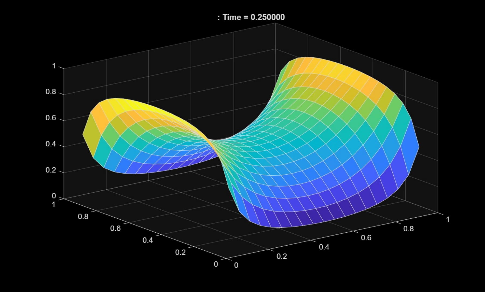

2D Heat Diffusion Model
This project starts with a simple question: if the edges stay at fixed temperatures, what happens to the rest of the surface? The browser experiment below uses the same finite-difference idea as my MATLAB model.
From the MATLAB model

A surface. Four edges. Your experiment.
Paint heat onto the grid, or change an edge temperature. Watch the field settle.
Try a warm left edge and a cold right edge. Or draw directly on the surface.
A browser adaptation of my heat-diffusion project. Relative temperature, unit diffusivity, fixed boundaries. Clicks add a temporary heat pulse.
The method and source code →Setting up the domain
I divided a square into 21 points along each axis. The four edges stay at temperatures supplied to the model; only the interior changes.
Numerical update
Each point looks at its four neighbors. The difference between them determines its next temperature. I keep the old and new grids separate so one update cannot accidentally influence another within the same step. In MATLAB, the time step is dx²/4 for the unit-diffusivity model.
Inspecting the result
The MATLAB version produces surface plots as the simulation runs. Here, you can change the boundaries yourself or add a patch of heat to see how the field responds.